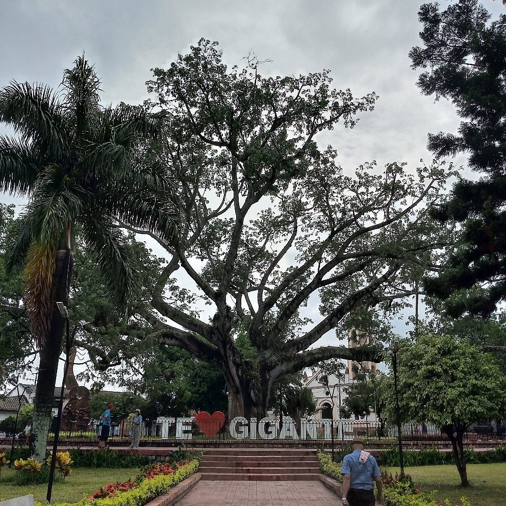

Gigante es un municipio colombiano ubicado al centro oriente del departamento de Huila. Hace parte de la región andina, sobre la margen izquierda del río Magdalena entre la cordillera occidental y el cerro Matambo Localizado en el departamento de Huila, Gigante es un municipio cuya superficie, población, altitud y otra información importante se proporciona a continuación. Para todos sus procedimientos administrativos, puede dirigirse a la alcaldía municipal de Gigante en la dirección y horarios indicados en esta página, o contactar al ayuntamiento por teléfono o por correo electrónico según su preferencia y datos disponibles.
